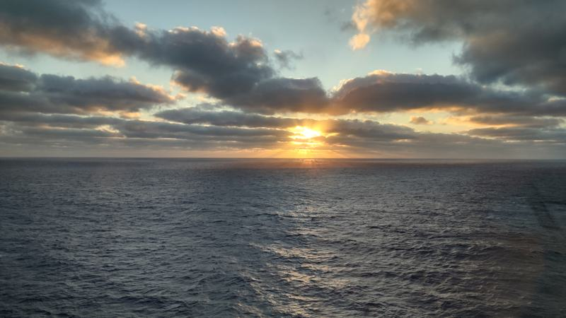
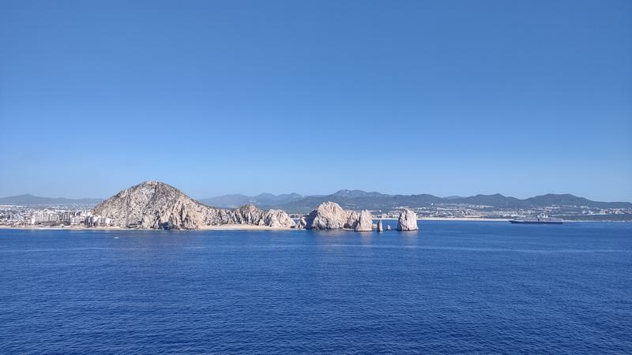
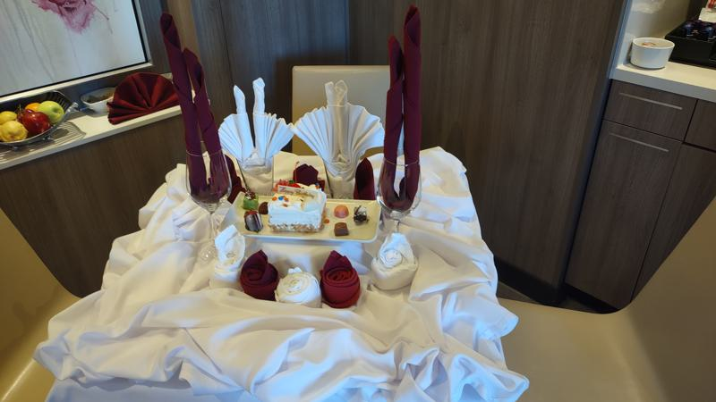
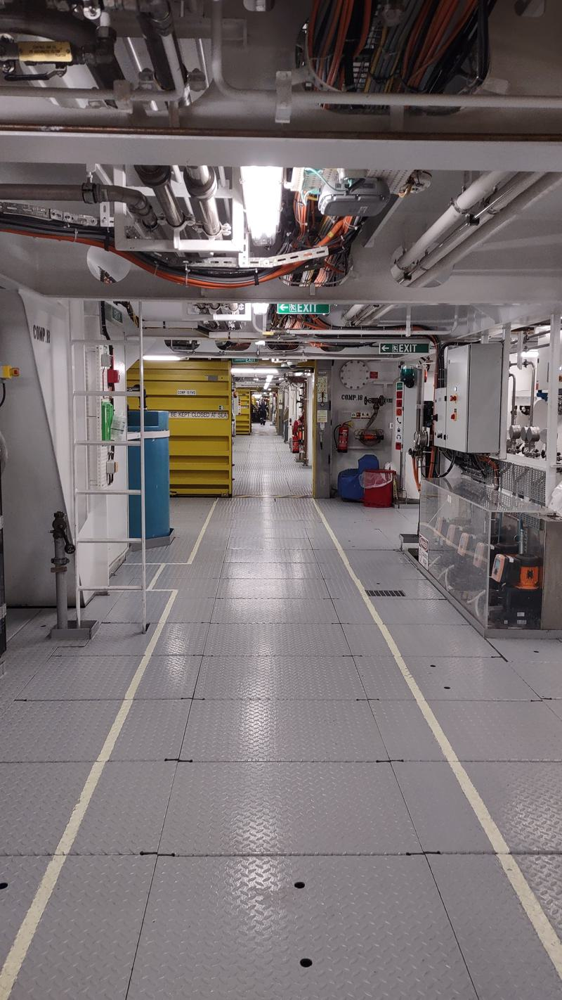
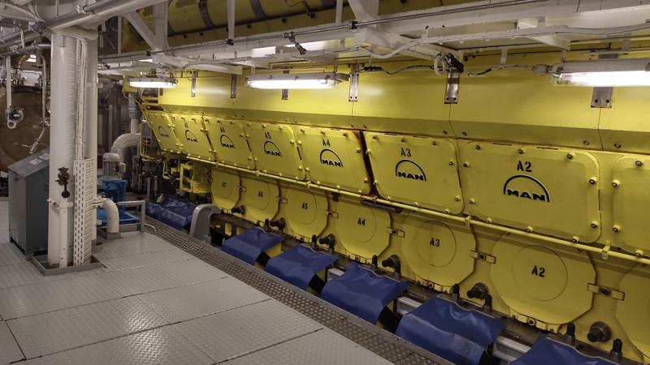
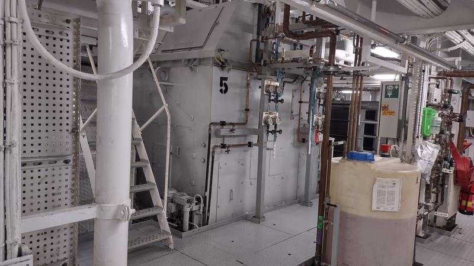
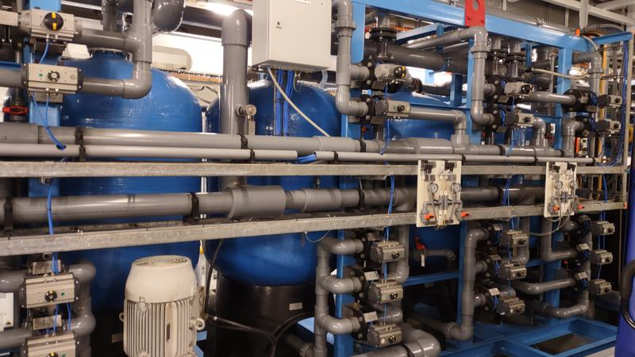
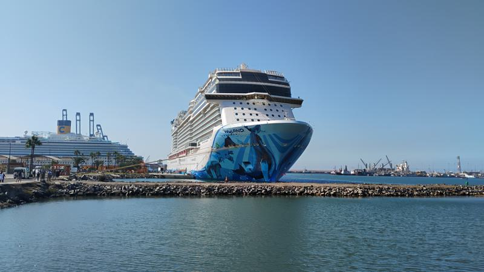

Tuesday, October 21, 2025 - Embarkation
We set off around 8am for the 80-mile drive to San Pedro, but heavy morning traffic turned the trip into a two-and-a-half-hour crawl. By the time we reached the port, the main terminal lot was already full. I was directed to an overflow lot about four miles away, so I dropped Becky off at the curb before heading out to park. After a quick shuttle ride back to the terminal, I reunited with Becky and found that boarding was already underway. We were able to walk right onto the ship without any wait.
Once on board, we handled the essentials first: checking in at our muster station and heading to the Cruise Next desk to sign up for a wine tasting. We enjoyed a quiet lunch in the Haven dining room, though I couldn’t resist a “second lunch” shortly after; we stopped by the buffet to check out the desserts, and I ended up with a plate of Indian food. They also had a beautiful “Welcome Aboard” cake, which was a nice (and delicious) touch.
We spent the rest of the afternoon exploring, catching the energy of the pool party and touring the spa. By the time we finished, the ship had begun its sail-away. We eventually made our way to the Haven Observation Lounge for some coffee and treats before heading back to the room. I managed to squeeze in a nap while Becky unpacked.
Later that afternoon, we tested our knowledge at a trivia session focused entirely on the Norwegian Bliss. For pre-dinner drinks, we headed to the A-List Bar, followed by a meal at the Italian restaurant. Becky ordered the shrimp pasta, while I went with the Chicken Cacciatore.
We capped off the night at a comedy show featuring a violinist who mixed jokes with musical snippets. Becky found the act a bit “lame” and wanted to head out early, but since it had been her idea to go, I insisted we stay - plus, I actually found some of it quite humorous.
Wednesday, October 22, 2025 - At Sea
Today was a sea day, and we both started early. After we each took a turn soaking in the tub, I enjoyed a cup of coffee and half of the cupcake Becky received for her birthday. We then headed to the Haven Observation Lounge for coffee before breakfast, where Becky added a splash of Baileys to her latte.
We spent the morning playing trivia with Penny and Mike, the couple from Mesa, Arizona, whom we met yesterday. We managed a respectable score of 11 out of 20. Afterward, we ran into Heidi, the Beverage Manager, and Wanda, the Restaurant Manager. Heidi kindly offered us coffee or anything else we might need; on past trips, she has been incredibly generous with extra bottles of water and wine. We ended up grabbing Starbucks, where I had a pumpkin latte and Becky chose a chocolate frappuccino.
Later, we browsed the ship’s gift shops to check liquor prices for home. We found Grand Marnier for $40 and Baileys Espresso Crème for $21.20. We also made sure to stop by and say hello to Djamel, the General Manager, and Elena, the Assistant GM, joined the conversation as well.
For lunch, Becky had a bunless fish sandwich while I opted for a Cobb salad. Afterward, we walked through the buffet to look for familiar faces. I couldn’t resist the Indian food station once I saw they had Butter Chicken, so I ended up having a second plate!
At 1pm, we headed to the Cavern Club for “Wines Around the World.” The event usually features a white and a red from four regions: the US, Chile, France, and Italy. I always look forward to this because they often serve a few of my favorites, specifically the French Pinot Noir. Following the tasting, Becky watched a movie while I mostly napped through it.
Our afternoon trivia was “Music Mania,” where teams had to guess songs based solely on the drum rhythm. One team was remarkably good, dominating the game by identifying almost every track.
The evening was a whirlwind of social events. At 6pm we attended the Latitudes Party in the Observation Lounge. There were about 200 guests who attended and six Ambassadors were on board. We had the chance to meet the ship’s Chief Engineer. At 7pm we moved on to the Captain’s VIP Party, enjoying wine and small bites.
To cap off a busy and enjoyable day, we headed to the Haven Restaurant for a late dinner.

Thursday, October 23, 2025 - Cabo San Lucas
Today we arrived in Cabo San Lucas. Since the ship anchors in the harbor, passengers head ashore via tender boats. The General Manager mentioned that two other ships are joining us in port today, so the harbor is quite busy.
I woke up early and brewed a coffee in our room using the Nespresso machine before we headed to the Haven dining room for breakfast. Becky enjoyed the French toast, while I had avocado toast topped with poached eggs.
By 10am, we made our way to the Haven Sundeck to soak up some sun. It was a very warm morning with hardly a breeze. After about an hour, we moved down to the Haven pool deck to take a dip and lounge in the chairs; it was surprisingly quiet, with only two other people out in the sun.
Around 1pm, we changed for lunch. We started with French 75s before our meal; I had a fish sandwich which was quite good, though Becky’s scallops were unfortunately a bit raw and rubbery.
When we returned to the cabin, we found it beautifully decorated for Becky’s birthday, complete with a cake! However, we noticed that some of Becky’s scrunchies and hair clips that had been on the bed were missing. We searched everywhere before calling our room steward to see if he had seen them. After the search, we settled in for coffee and cake. I took a nap while Becky bathed, and then I grabbed a shower before the evening festivities.
We began our evening with pre-dinner cocktails at the A-List bar. Dinner was at Le Bistro, the ship’s French restaurant, where we were joined by Chief Engineer Marijan and Chief Electrical Engineer Zeljko. Becky and Marijan chose the lamb chops, while Zeljko and I had the beef tenderloin. After we ordered dessert, the staff surprised us by bringing out a large birthday cake for Becky. We all enjoyed a slice alongside our original dessert orders.
Since the shops were still open after dinner, we stopped in and bought a shirt for Becky, leaving us with about $6 in non-refundable credit. We tried to catch the comedy show, but it was standing room only, so we decided to head to the main theater instead. We watched “The Beatles Experience,” which was a very good show.
To end the night, we stopped by the Haven Bar for a nightcap before finally heading to bed.


Friday, October 24, 2025 - At Sea
Today was another relaxing sea day. We started our morning in the room, enjoying a slice of birthday cake with our coffee before heading up to the Haven for a full breakfast. Becky tried a “BFK”—a coffee cocktail made with Baileys, Frangelico, and Kahlúa—which she really enjoyed. For our meal, I ordered the Eggs Benedict, and Becky had scrambled eggs with diced ham.
After breakfast, we headed downstairs for trivia. we teamed up with two passengers we had met the day before, both named Mike. We managed to score 11 points, which unfortunately wasn’t quite enough to land us in the top three.
Later, we changed into our bathing suits and went to the Haven pool to relax. We had the entire area to ourselves, so we spent some quiet time sitting in the chairs by the water’s edge.
For lunch, we returned to the Haven restaurant. Becky ordered the shrimp scampi, and I had the Brie Burger. I’ve found that the Brie Burger can be hit-or-miss; today it wasn’t quite as good as I remembered it being in the past.
In the afternoon, we attended a presentation about future NCL cruises and stayed for the following trivia session. We didn’t actually play this time; instead, I spent the hour chatting with Barry, whom we met yesterday. He is a retired Army veteran who essentially lives on cruise ships now—he had some fascinating perspectives to share.
Back in the room, we enjoyed our afternoon canapés, which today was a vegetable crudité platter with ranch dip.
We kicked off the evening with pre-dinner drinks at the A-List Bar before heading to Cagney’s (the Palomar Grill) for dinner. Becky had the lamb chops and mentioned they were even better than the ones she had the other night. I opted for the sea bass, which was excellent.
Saturday, October 25, 2025 - Ensenada, Mexico
Today we docked in Ensenada, arriving around 9:30 AM. We started our morning with breakfast in the Haven dining room. At 8:00 AM, I called the Chief Engineer to confirm our 11:00 AM appointment for a behind-the-scenes tour of the ship. With disembarkation looming tomorrow, we also spent a portion of the morning getting a head start on our packing.
At 11:00 AM, we met the Chief Engineer for an extensive tour of the ship’s technical spaces. It was an incredible look at the complex systems that keep the vessel running, including:
Engine Control Room which was a high-tech hub filled with monitors used to track every ship system. We saw the reverse osmosis systems used for fresh water production and the treatment plant that processes gray and black water before discharge. We toured the main engines, generators, and the Azipod systems and controllers. We had a look at the ship’s stabilizers, emergency generators, and fire suppression systems. We also viewed the refrigeration systems and the massive pumps for the water supply.
After the tour, we headed ashore to browse the vendor stalls and souvenir shops near the pier. Once back on board, we changed into our swimwear and spent some time at the Haven pool before heading to lunch. We finished eating around 2:00 PM, enjoyed another hour lounging by the pool, and then returned to the cabin. While Becky took a relaxing bath, I began preparing for our final evening on board.
At 4:15pm, we attended a round of general knowledge trivia, followed by our usual pre-dinner drinks at the A-List Bar. We enjoyed a quiet final dinner in the Haven restaurant. Before heading to bed, we finished the rest of our packing to ensure a smooth departure tomorrow morning.





Sunday, October 26, 2025 - Los Angeles, Disembark
The Bliss entered Los Angeles Harbor around 4am. We woke up early to finish our final packing and organization, ensuring we were ready to head to breakfast as soon as the Haven dining room opened. After I showered, Becky took one last soak in the tub before we headed upstairs at 6:30am.
We disembarked the ship around 7:30am. The entire process was remarkably quick and easy. Regrettably, I decided to have a cup of coffee this morning - something I usually avoid on travel days - which did necessitate a bathroom stop along the way. Fortunately, the freeway traffic was light, and we were back home by 10am.